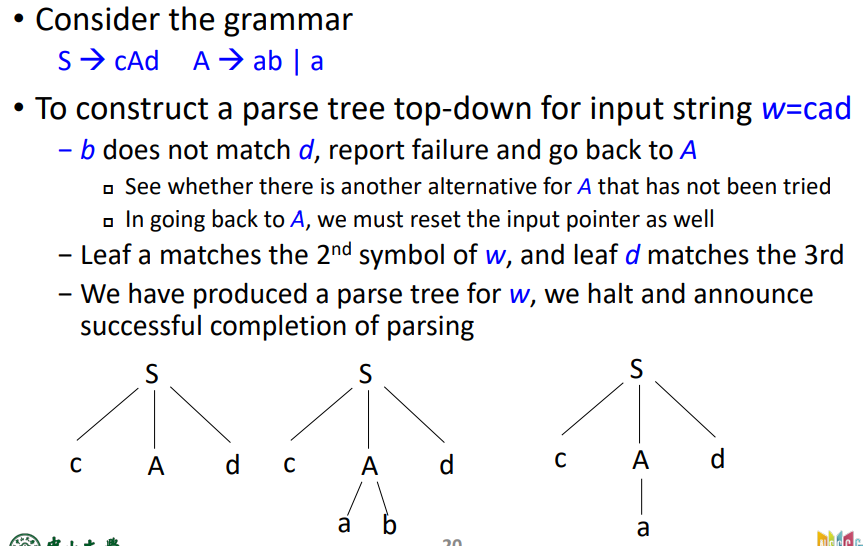

编译原理课程笔记(五)
语法分析(4)
语法分析的作用：判断写的代码是否符合编程语言的语法，并建立parser tree，为语义分析做准备。
两种不同分析方式：自顶向下，自底向上
自顶向下：从语法树的根开始，逐渐扩展树，分为backtrack和predictive两种。基于最左推导。更好理解和手动操作
自底向上：是最右推导的逆运算，应用范围更广，more powerful and automatic.
如下图，不同方法由grammar G 推导出串acbd的过程如下：

BackTrack
通用，需要先消除左递归。
- 从S开始，根据产生式生成子节点，根据子节点的产生式继续生成……直到获得终结符。
- 对比当前终结符与输入字符串中的待输入终结符，如果一致就accept这个字符，继续从下一个子节点开始生成。
- 如果不一致，返回上一个节点，换一个产生式生成子节点。

缺点：低效，时间复杂度是指数级的；撤消语义操作可能很困难（删除分析树中的某个节点）
Predictive Parser
往前看一步
每一个候选产生式的第一个终结符都唯一时，便不需要回溯
e.g
A->aBD|bBB
B->c|bce
D->d
若需要产生abced，则第一条一定用aBD，第二条因为B能推导出的非终结符只有b或c，所以选择bce.
使用什么产生式的依据：
下一个输入符号
当前正在处理的非终结符
上面无法判断的情况：
共同前缀 \(A\to \alpha\gamma|\alpha\beta\)
左递归 \(A\to A\beta|\alpha\)
对无法判断情况的处理方式——改写产生式。
共同前缀
- 提取公因子,如\(A\to \alpha\gamma|\alpha\beta\)
- \(A\to \alpha A'\),
- \(A'\to \beta | \gamma\)
- "推迟选择"
左递归
- 同样推迟选择
- \(A\to\alpha A'\),\(A'\to \beta A'|\epsilon\)
LL(k) Parser
L：从左往右扫描
L：生成最左推导（top-down）
k：向前看k个符号
Parser Table
行：非终结符，列：向前看到的终结符
input buffer : 初始放input string，最后加一个$
stack: 初始栈顶为$,栈内只有一个元素
一个stack里如果有终结符说明终结符还未与input匹配，如果有非终结符说明还没有展开
− Parse table
- M[X,a] 代表stack top为X，buffer待匹配的symbol为a时，查表是否有规则$X... $
Parse driver
- 根据<stack top, current token>做出action
| Table | int | * | + | ( | ) | $ |
|---|---|---|---|---|---|---|
| E | E \(\to\) TE' | E \(\to\) TE' | ||||
| E' | E'\(\to\)+E | E'\(\to\epsilon\) | E'\(\to\epsilon\) | |||
| T | T\(\to\)int T' | T\(\to\)(E) | ||||
| T' | T'\(\to\) *T | T'\(\to\epsilon\) | T'\(\to\epsilon\) | T'\(\to\epsilon\) |
第一列列出了非终结符,第一行是“向前看”（即从左往右遍历时下一个将要遇到的）的终结符号（和额外的$符号,$代表句子末尾）
对栈内的每一步，要么expand，要么match
<X,a>:X代表栈顶的symbol，a代表当前buffer中将要匹配的input token
- 如果X是非终结符
- X=a且a=$ 则匹配完成
- X=a且a为终结符，则匹配下一个
- 否则，halt and reject input
- 如果X是终结符
- if have M[X,a],则X\(\to\) RHS,X出栈，RHS逆序进栈（例如int T'）先进T’再进int
- 若M[X,a]没有对应项，则halt and reject
如何构建Parser Table
1.First集
First(\(\alpha\))--\(\alpha\)能推导出的第一个终结符的集合。
反复进行下述判断，直到没有新的字符添加进任何First集中：
- 如果X是终结符，则First(\(X\)) = {\(X\)}
- 如果X是非终结符，且X能推导出空字符，则First\((X)\)包含\(\epsilon\)
- 如果X是非终结符，\(X\to Y_1Y_2Y_3...Y_k\)，then：
- 如果a在First(\(Y_i\))中，且1~i-1的First集中都有空字符，那么a也在First(\(X\))中
- First(\(Y_1\))的所有字符一定在First(\(X\))中
- 如果\(Y_1-Y_k\)的First集都含有空字符，那么First(X)也有空字符
2.Follow集
可以在A后面出现的终结符集合。
反复进行下述判断，直到没有新的字符添加进所有non-terminal的Follow集中：
- 如果S是开始符号，则$在S的Follow集中。
- 如果有产生式\(A\to\alpha B\beta\)，First(\(\beta\))中的所有符号，除了空字符，都在Follow(B)中。
- 如果有产生式\(A\to \alpha B\) 或者 \(A\to\alpha B\beta\)，First(\(\beta\))有空字符，那么所有Follow(A)中的字符也在Follow(B)中。
这俩集合的作用：区分使用哪个推导式
3.Construct LL(1) Table
对于rule \(A\to \alpha\) 和 symbol a：
如果\(\alpha\)的First集中有空字符，或\(\alpha=\epsilon\)，a在Follow(A)中，则把\(A\to\alpha\)添加到M[A,a]中。
对于First(\(\alpha\))中的非空字符b，直接把\(A\to\alpha\)添加到M[A,b]中
判断是否是LL1文法：LL1表中每个格子只有至多一个推导式
第二种方法：LL1文法的充要条件——对于\(A\to \alpha|\beta\) 要满足：
- First(\(\alpha\))\(\cap\)First(\(\beta\)) = \(\empty\)
- \(\alpha,\beta\)中至多有一个可以产生 \(\epsilon\) (derive \(\epsilon\)) eg \(\beta\to...\to\epsilon\) [包含多步产生的情况]
- 如果\(\beta\)产生了空字符，那么\(\alpha\)的First集 和 A的Follow集交集为空。
不是LL1的可能可以通过去除左公因子和左递归来变成LL1
复杂度
使用LL1 Table的时空复杂度
时间上，每一个symbol都会在常数时间（至多为规则条数）内判断是否accept
空间上，（指stack的最大大小）要小于input的大小
LL2-LLk的parse table大小：
\(O(|N|*|T|^k)\)
其中，N为非终结符集合大小，T为终结符集合大小